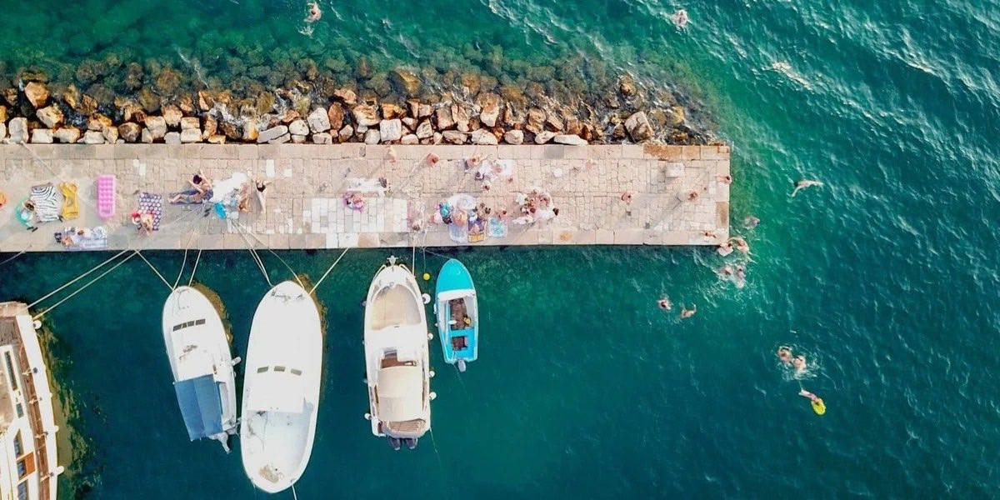
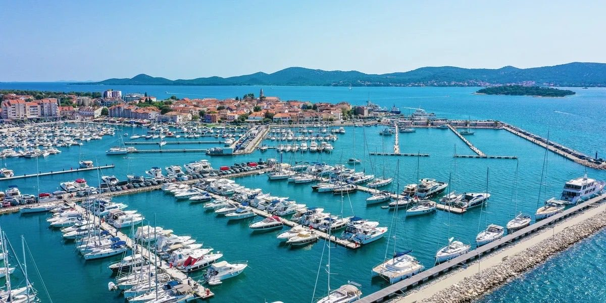
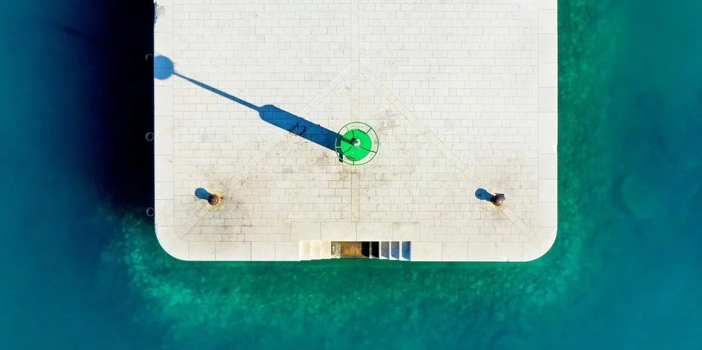
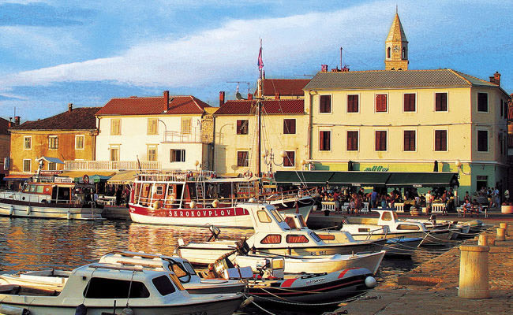

Motorni brod
Motorni brod
Rent a Boat · Biograd na Moru
Vaš dan na moru počinje ovdje.
Trinaest brodica i gumenjaka, od male Adrie 500 do Antaresa 8. Uplovite u Pašmanski kanal, do Galešnjaka, Vrgade ili Kornata – bez žurbe i bez gužve.
- Biograd
- Tkon
- Pakoštane
- Sv. Filip i Jakov

od 90 €dnevno
Zašto brod
Mirne vode, daleko od svakodnevice.
Svi smo zatrpani obvezama i teško je naći vrijeme za sebe. Na brodu je drugačije: plovite kroz mirne uvale, otkrivate skrivene otočiće i nigdje ne žurite.
S našim brodom iz Biograda na dohvat su vam Pašmanski kanal, Galešnjak – otok ljubavi – i Nacionalni park Kornati. Samo se opustite i uživajte u prirodi.
13brodica i gumenjaka
4mjesta preuzimanja
16osoba na najvećim brodovima
300KS najjači motor u floti
Flota
Svih 13 brodova Brod po mjeri vašeg društva.


Kamo ploviti
Jedan dan, cijeli arhipelag.
Biograd leži na poluotoku, okružen marinama i bistrim morem Pašmanskog kanala. S jedne strane su nacionalni parkovi i parkovi prirode, s druge živahne luke i restorani.
Pošalji upit- Pašmanski kanalMirno more između kopna i Pašmana, odmah ispred Biograda – idealno i za najmanji brod.
- Galešnjak – otok ljubaviOtočić u obliku srca u Pašmanskom kanalu.
- VrgadaS Adrijom 500 kroz Pašmanski kanal – od Galešnjaka sve do Vrgade.
- NP KornatiOtoci i otočići Kornata – za brže brodove poput ZAR-a 61 ili Cap Camarata.
- Uvale Dugog otokaDaleko od gužve, s obitelji ili prijateljima.
Biograd na Moru
Nekad grad hrvatskih kraljeva, danas vaša luka.



Biograd je savršen spoj povijesti, prirode i turističke ponude: moderne marine, kulturne znamenitosti, plaže i zalasci sunca. Ovdje, gdje su nekad vladali kraljevi, vi ste kralj svog odmora.
Gdje preuzimam brod?
Baza je u Biogradu na Moru, a svi brodovi dostupni su i u Tkonu, Pakoštanima i Svetom Filipu i Jakovu. U upitu samo navedite gdje želite preuzeti brod.
Je li gorivo uključeno u cijenu?
Ne. Gorivo se plaća posebno. Uz svaki brod u floti navedena je približna potrošnja – od 1–3 l/h kod Adrie 500 do oko 15 l/h kod većih brodova.
Koliki je depozit?
Ovisi o brodu: od 200 € (Adria 500) do 1.000 € (Antares 8, Atlantic 690, Cap Camarat 7.5 WA). Iznos za svaki brod piše u cjeniku.
Trebam li dozvolu za upravljanje brodicom?
Za većinu brodova da – to je navedeno uz svaki brod u floti. Ako niste sigurni, nazovite nas prije rezervacije.
Mogu li unajmiti brod na tjedan dana?
Da. Uz dnevni postoji i tjedni najam (7 dana) za svih 13 brodova. Cijene po sezonama su u cjeniku.
Kada je sezona?
Cjenik vrijedi od 15. svibnja do 30. rujna, podijeljen u četiri razdoblja. Najpovoljnije je u drugoj polovici svibnja.
Kontakt
Rezervirajte svoj dan na moru.
- Vladimira Nazora 26, 23210 Biograd na Moru
Otvori na Google kartama
Najam u Biogradu, Tkonu, Pakoštanima i Svetom Filipu i Jakovu – dnevni ili tjedni.